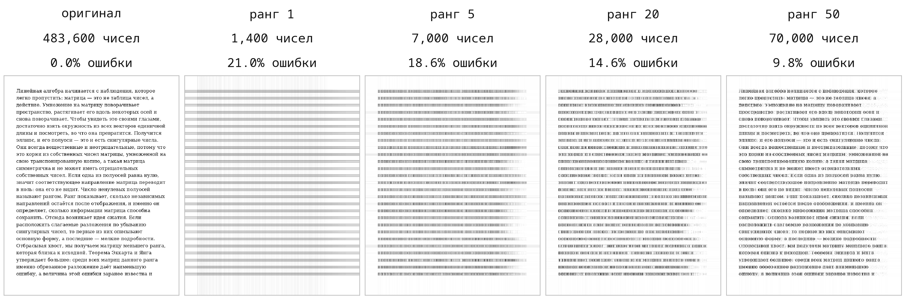
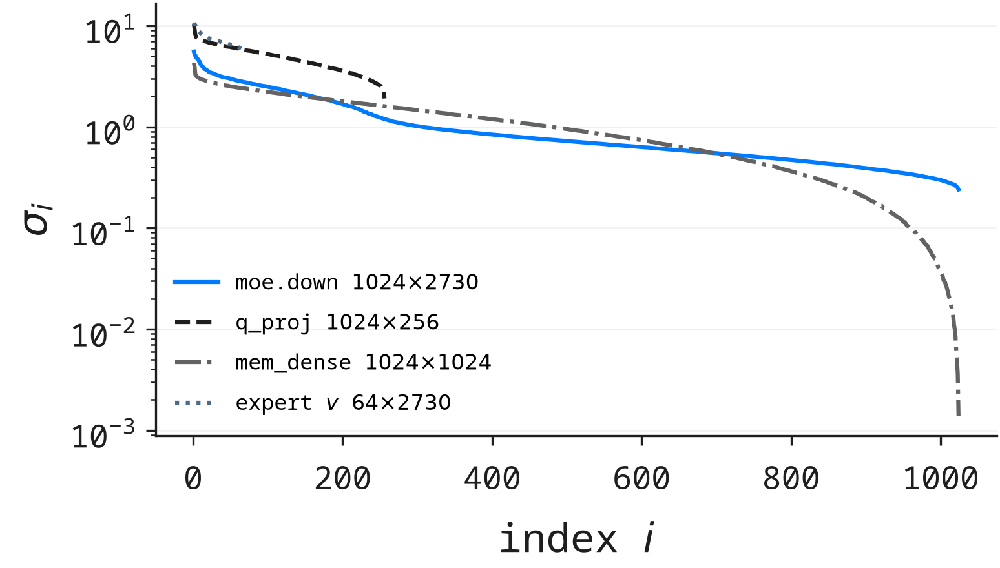
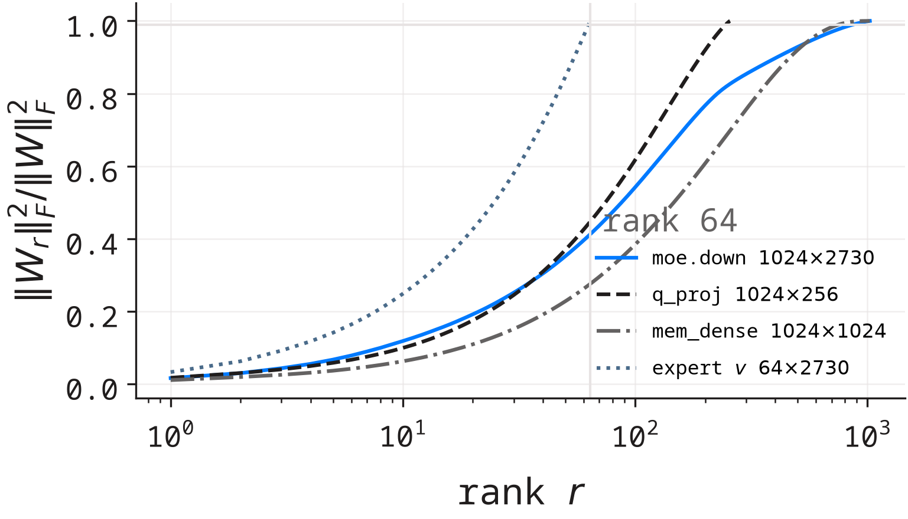

сжатие готового
Дана фиксированная W. Насколько точно её повторит ранг r?
ответ: плохо
Теорема Эккарта–Янга, один опыт и один результат, который противоречит ожиданию.
Чёрно-белая фотография 480 × 480 — это таблица из 230 400 чисел. Именно столько места она занимает.
что понадобится
всё остальное выведем по дороге
Возьмём все векторы длины 1 — это окружность (в пространстве — сфера). Умножим каждый на матрицу A и посмотрим, что получится.
Получится эллипсоид. Его полуоси — это и есть сингулярные числа σ₁ ≥ σ₂ ≥ ⋯ ≥ 0.
Если какая-то полуось равна нулю — матрица не видит этого направления. Число ненулевых полуосей и есть ранг.
никакой магии: это тот же факт, что «образ плоскости — плоскость или прямая»
Ранг — размерность образа: сколько независимых направлений матрица реально «видит». Через σ это просто:
Сингулярные числа — это корни из собственных чисел матрицы AᵀA:
отсюда сразу: σ всегда вещественные и неотрицательные
проверка на пальцах — это и есть домашний пример
A = [1 2; 2 4]. Вторая строка = 2 × первая, значит ранг 1, одно σ равно нулю.
Сумма квадратов всех элементов = σ₁² + σ₂²:
Проверьте на следующей паре: [3 0; 0 4] → σ = 4 и 3.
| множитель | что делает | размер |
|---|---|---|
| Vᵀ | поворачивает вход на главные оси | n × n |
| Σ | растягивает ось i в σi раз | m × n |
| U | поворачивает результат в пространство выхода | m × m |
Полезная арифметика: сумма квадратов всех элементов матрицы равна сумме квадратов её σ. Поэтому σ² — это «сколько энергии» сидит в направлении i.
Разложение: A = σ₁ u vᵀ, где u и v — единичные векторы вдоль (1, 2). Одно слагаемое — и матрица восстановлена точно.
Считаем стоимость: было 4 числа, стало 2 + 2 = 4. Экономии нет.
когда экономия появляется
Для 2×2 это никогда. Для 1000×1000 — уже при r < 500.
То есть сжатие — это про большие матрицы, у которых ранг мал по сравнению с размером.
Оставим только r первых слагаемых: Ar = σ₁u₁v₁ᵀ + ⋯ + σrurvrᵀ. Тогда для любой матрицы B ранга не больше r:
Любая матрица B ранга r обнуляет целое подпространство размерности не меньше n − r — своё ядро.
Возьмём единичный вектор z из этого ядра: Bz = 0. Тогда A и B расходятся ровно на Az:
Остаётся выбрать направление, которое B не видит, а A видит сильнее всего — это и есть σr+1.
Сохранить все направления, оставив только r слагаемых, нельзя — и предыдущая строчка это доказывает. Именно поэтому точную матрицу ранга 100 нельзя заменить матрицей ранга 10.
заметьте: мы не использовали ни данных, ни обучения. Это факт про линейные отображения.

Оригинал — 483 600 чисел. При ранге 1 нельзя прочитать ни слова, при 20 читается почти всё, при 50 отличить от оригинала нельзя. Ошибки внизу — ровно те, что предсказывает формула теоремы, посчитанные заранее.
λ есть только у квадратных матриц и бывают отрицательными или комплексными.
σ есть у любой матрицы, всегда вещественные и неотрицательные.
Для симметричной матрицы они совпадают по модулю: σ = |λ|. Во всех остальных случаях это разные вещи.
пример, где разница видна сразу
| значения | |
|---|---|
| собственные λ | 0 и 0 |
| сингулярные σ | 1 и 0 |
По λ матрица «ничего не делает», но вектор (0,1) она переводит в вектор длины 1. Это видно только через σ.

Четыре матрицы из настоящей модели: 1024×2730, 1024×256, 1024×1024 и 64×2730. Спектр падает, но ни одна не обрывается в ноль.

| матрица | масса при r = 64 |
|---|---|
| moe.down | 41% |
| q_proj | 45% |
| mem_dense | 28% |
| эксперт v | 100% |
Обученные матрицы не почти низкоранговые: ранг 64 сохраняет лишь 28–45% «энергии».
То есть просто взять и обрезать обученный слой — плохая идея. А последняя строка — исключение, и у него структурная причина.
Экспертная матрица имеет ранг 64 по построению: в модели вообще не хранится матрица 64 × 2730 — хранятся две тонкие, и их произведение всегда ранга ≤ 64.
ответ: плохо
ответ: почти бесплатно
Теорема Эккарта–Янга ограничивает первое. Про второе она не говорит ничего — а именно второе работает в реальных моделях.
задача на дом (20 минут)
Возьмите A = [2 0; 0 1]. Найдите σ, постройте A1, посчитайте ошибку по формуле и проверьте её прямым вычислением.
куда смотреть дальше
SVD и низкоранговые приближения · сжатие изображений · факторизация весов в нейросетях